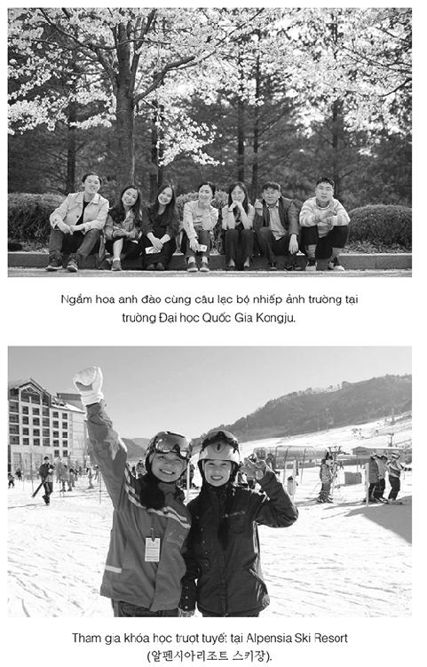

Kẻ giỏi nhất. Không, Nerron không thể nhớ mình từng cảm thấy dễ chịu thế này bao giờ chưa. Gã đã lấy được chiến lợi phẩm của Jacob Reckless và làm nhục anh như làm nhục một tay thợ săn mới vào nghề.
Lần này Hoàng Tử Bé cũng không thể làm hỏng tâm trạng của gã, dù Louis đi kể khắp xung quanh là bọn họ đã để một tên gián điệp Albion trốn thoát do lỗi của Nerron, sau khi hắn, Louis, mang về cho gã một trinh nữ hoàn mỹ. Suốt cả ngày dài, hẳn từ chối lên đường đi Vena, và từ lúc ấy chuồn đi với những cô gái bị mở cúc áo kim cương của hắn làm cho lóa mắt. Nam nhân ngư dành nhiều đêm đi tìm hắn trong những nhà kho và nhà nông trại, bắt đầu quan sát thân chủ hoàng tộc của mình với nỗi chán ghét mà Nerron sẽ không ngạc nhiên nếu một buổi sáng tìm thấy Louis bị dìm chết trong máng ngựa. Tất nhiên chẳng có điều gì trong số đó được đề cập trong nhật ký hành trình mà Lelou luôn nguệch ngoạc viết không mệt mỏi. Thay vào đó, lão viết về mỗi lâu đài mà họ đi qua, mọi con đường đóng băng và mọi người lùn sống trong núi ném đá vào họ. Nerron kiểm tra những ghi chép của lão mỗi đêm (thật chữ viết của lão Bọ rất dễ đọc) và ngủ gục trên đó.
Đúng, mọi việc đều tuyệt.
Mặc kệ Louis.
Mặc kệ Lelou.
Mặc kệ mùi cá của Eaumbre.
Họ sẽ sớm đến Vena, gã sẽ tìm ra quả tim, lấy lại bàn tay từ Louis và nâng cốc tưởng nhớ Jacob Reckless.
Но qua đêm trong một nhà nghỉ ở Bavaria, và Vena chỉ còn cách một ngày đường khi Nerron nhận ra đoạn cuối cuộc đi săn có lẽ sẽ không mấy suôn sẻ.
Gã tỉnh dậy vì cảm giác kim loại lạnh ngắt trên cổ. Louis đang đứng cạnh giường gã, ánh mắt mơ màng vì phê bột tiên nhí, kề dao vào cổ gã.
“Ngươi đã nói dối ta, Goyl,” hắn gầm gừ và giơ cao một chiếc túi-giấu-đồ mà Nerron nhận ra là của Reckless, mặc dù gã đã say mèm vì uống rượu gia vị nóng, thứ rượu người ta phục vụ trong mọi nhà nghỉ ở xứ Bavaria.
Nerron chỉ cần thoáng nhìn thấy khuôn mặt bọ của Lelou đang nhìn chăm chăm ra từ phía sau cùi chỏ của Louis để hiểu ai đã dẫn dắt Hoàng Tử Bé lần theo dấu vết của chiếc túi.
“Đó là cái thủ cấp!” Lelou khẳng định với giọng điệu buộc tội. “Nó đập ta một cú. Và nó gào thét.”
“Hẳn là nó ếm ông rồi,” Nerron nói, đẩy con dao của Louis qua một bên.
Cái mũi nhọn của Nerron tái nhợt đi, nhưng Louis cúi xuống giường Nerron đầy đe dọa.
“Ngươi đã cố lừa ta, Goyl. Ngươi giữ cái đầu bao lâu rồi?”
“Anh ta muốn đưa nó cho ngài.” Cái bóng tối đen nơi cánh cửa để mở chính là nam nhân ngư. “Người Goyl đã hỏi tôi anh ta có thể tìm ngài ở đâu, nhưng ngài không có trên giường.”
Đó là lời nói dối vụng về nhất mà Nerron từng nghe, nhưng qua giọng thì thầm của nam nhân ngư lời nói dối ấy nghe như sự thật nặng ký.
“Tôi làm việc cho phụ thân ngài,” Nerron nói, giật chiếc túi-giấu-đồ khỏi tay Louis. “Ngài quên rồi à? Tôi chỉ làm theo chỉ dẫn của ông ta. Cái thủ cấp ở chỗ tôi. Trừ phi ngài để tôi dạy ngài cách tự vệ trước lời nguyền của nó.”
Lelou vẫn trốn sau lưng Louis.
Chờ đi, lão Bọ. Ta sẽ chỉ điểm lão cho tất cả đám người lùn sống trong núi mà chúng ta gặp trên đường.
Louis vuốt lưỡi dao, tưởng tượng xem nó sẽ cắt da gã Goyl như thế nào. “Tốt. Giữ thủ cấp đi. Tạm thời thế đã.”
Eaumbre vẫn đứng nơi ngưỡng cửa.
Có lẽ Lelou nghi ngờ Nerron nói dối. Nam nhân ngư biết điều đó.
Nerron đến buồng Eaumbre ngay khi nghe tiếng ngáy như châu chấu vang lên sau cửa phòng Lelou và tiếng cười hi hí của một cô ả trong phòng Louis.
Eaumbre đang nằm trên giường, đổ một bát nước lên bộ ngực đầy vảy.
“Ra giá đi nào,” Nerron nói.
“Rồi sẽ rõ cả thôi,” nam nhân ngư thì thầm.